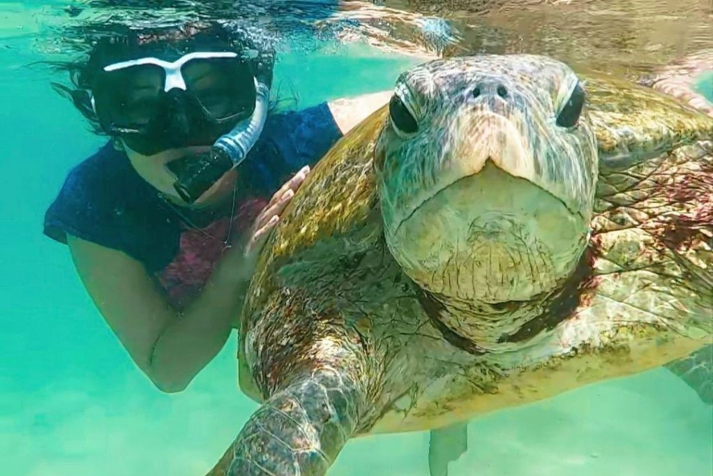
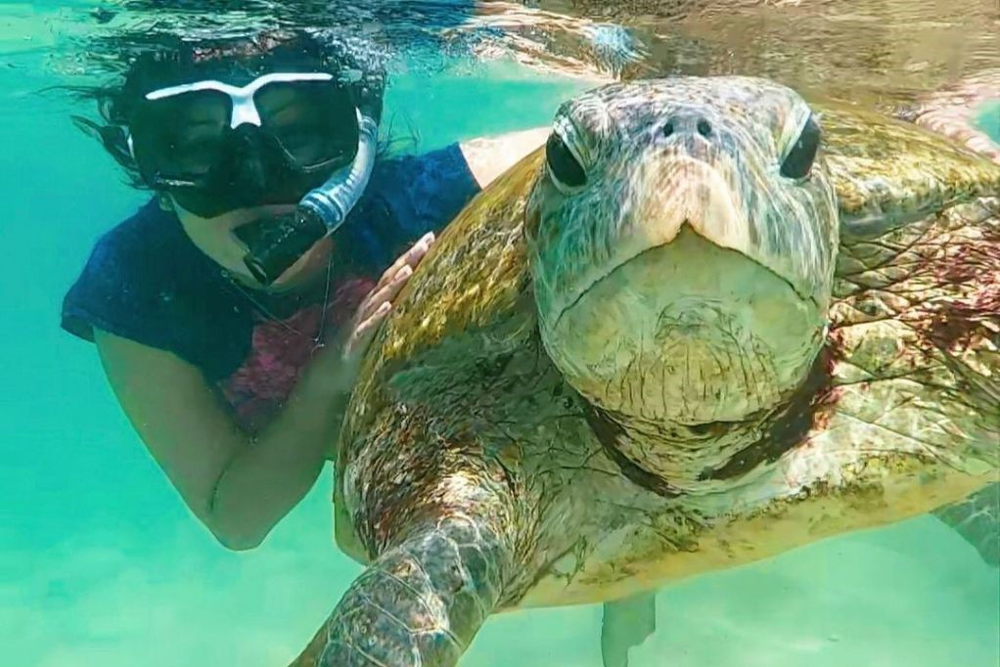

The Hikkaduwa Turtle Hatchery is a special place in Hikkaduwa, Sri Lanka, where people work to protect sea turtles. Sea turtles are endangered, meaning there aren't many left in the world. The hatchery helps by collecting turtle eggs and taking care of them until they hatch. Then, they release the baby turtles into the ocean to give them a better chance of surviving.At the hatchery, the staff finds turtle eggs that are in danger, like when they're on a beach where they could be harmed. They take these eggs and put them in safe places called hatcheries. These hatcheries are like pretend homes for the eggs, where they can grow safely. The people at the hatchery watch over the eggs, making sure they have the right temperature and humidity to grow properly. If you visit the Hikkaduwa Turtle Hatchery, you can see the eggs and watch as they hatch into baby turtles. The hatchery is a great place to learn about different kinds of turtles, how they live, and why it's important to protect them. After the baby turtles hatch, they stay at the hatchery for a while to get stronger and healthier. Then, the staff releases them into the ocean. The hatchery also teaches people about taking care of the environment and how to be responsible when visiting turtle habitats. When you visit the Hikkaduwa Turtle Hatchery, you can help support their work by paying a small fee or making a donation. This money goes towards saving more turtles and doing research to learn more about them. Overall, the Hikkaduwa Turtle Hatchery is an important place for protecting sea turtles in Sri Lanka. They take care of the eggs, help the baby turtles grow, and teach people about why we need to protect these amazing animals.
 
